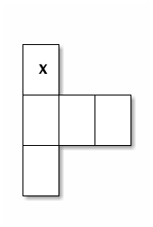
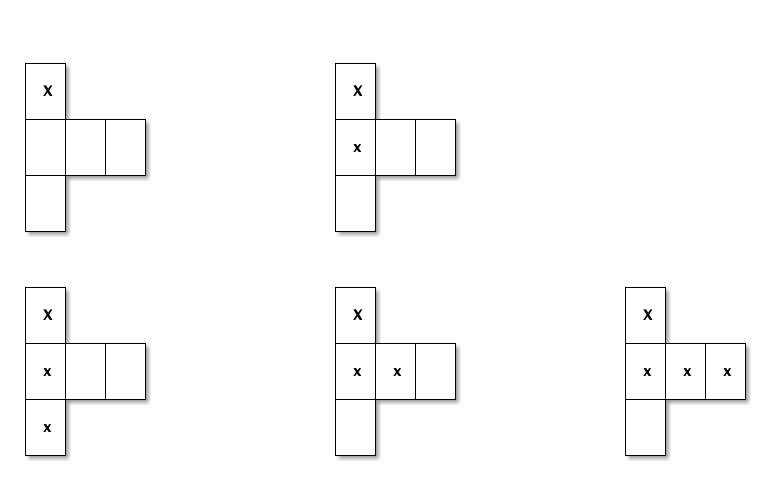
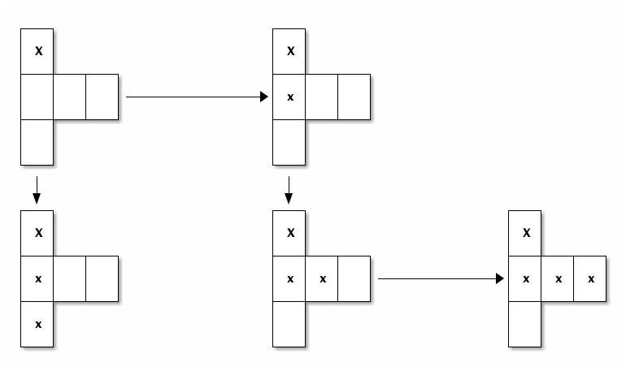
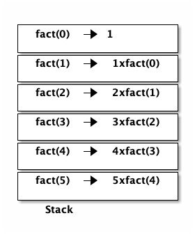
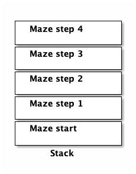

Recursive Search
Prerequisites
- Simple recursion in Java
- How the recursion stack saves values


You're lost in a maze
- How do you find your way out?
- Right Hand rule:

Fail!!!!!

Let's go to the literature
- Theseus

- Hansel and Gretel

We can look at a "State" of the maze

Or a bunch of states

And we can transition from state to state

What do we need?
- Take steps one at a time to get closer to our solution
- Keep track of where we've been so we can back up
- Recursion!!!!!!!!!!
Recall factorial:
public int fact(int n){ if (n<=1) return 1; else return n * fact(n-1); }
Storing previous state:
Factorial

Maze

Working it out
- Base case?
- found exit?
- hit a wall?
- Move to next state?
- four possible recursive calls
- x+1, x-1, y+1, y-1
How can we represent our maze?
- 2D array
- Space = wall, # = path, z = us
################# # # # # # # # ################## # # # # # # # # # # # ####### # ########## # ### # # # # #################### # # ##### # # # # # # # # # # # # # # # # # # # # ################ ############### # ####### # ##########$y
Algorithm
- Base cases
- If we're at a wall, return
- If we're at the exit, set solved to true and return
- If we're solved, return
- Recursive reduction
- Put us (z) in the current x,y location of the 2D array
- solve from the x+1 location
- solve from the x-1 location
- solve from the y+1 location
- solve from the y-1 location
- if not solved, remove us from the board
Solver
public void solve(int x, int y){ if (board[x][y]==wall || board[x][y]==visited || solved){ return; } if (board[x][y]==exit){ System.out.println(this); solved = true; } System.out.println(this); board[x][y]=me; solve(x+1,y); solve(x-1,y); solve(x,y+1); solve(x,y-1); if (!solved){ board[x][y]=visited; } }
Let's look at finished solver
Next steps
- Other state space search and related problems
- Heuristic Search
- Pathway to more advanced search (A*)
- implicit data structures